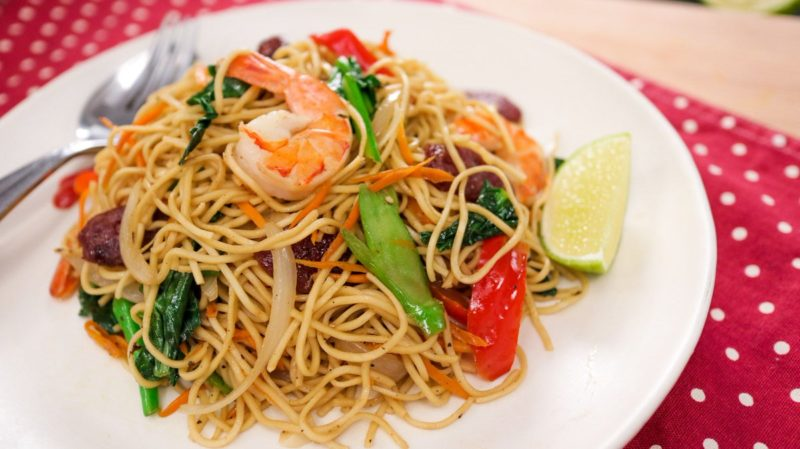

Chow mein

Chow mein is a popular dish in Nepal. It isn't of Nepali origin, however, Nepali chow mein has something unique to offer which other Chow mein dishes cannot: a Nepali taste.
Ingredients
- Noodles
- Meat of choice
- Masala
- Oil
Steps
- Boil the noodles and bring them to al dente.
- Fry masala and protein of choice in high heat.
- Add noodle to the mix.
- Add Ketchup to enhance taste.